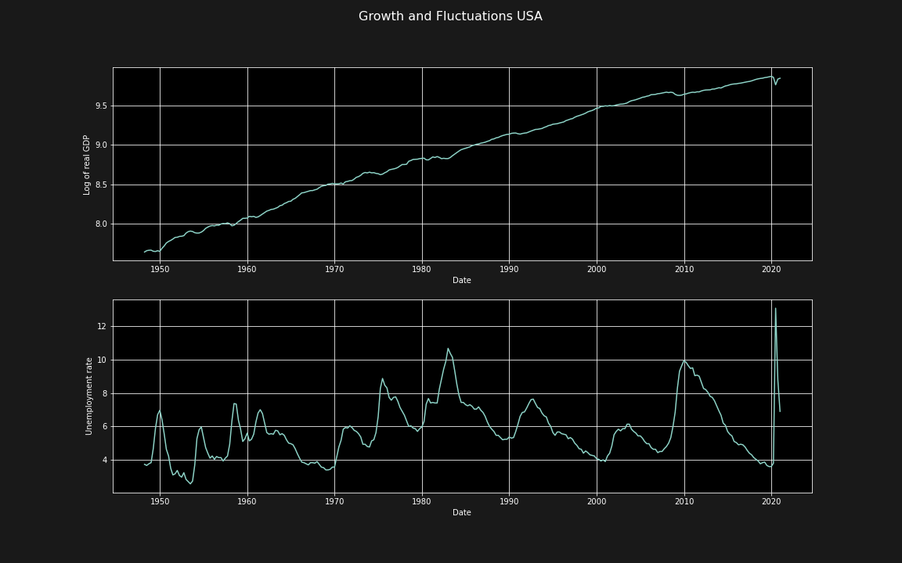
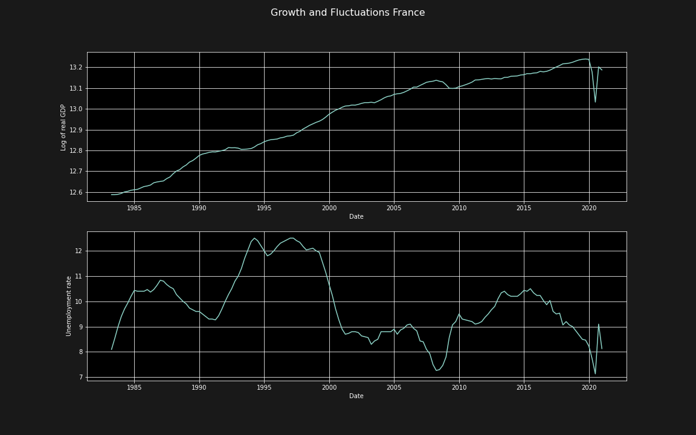

<!doctype html>
<html lang="en">

	<head>
		<meta charset="utf-8">

		<title>reveal.js - Class 2</title>

		<link rel="stylesheet" href="plugin/reveal.css">
		<link rel="stylesheet" href="plugin/black2.css" id="theme">
        <link rel="stylesheet" href="plugin/monokai.css">
        <link rel="stylesheet" href="plugin/title-footer.css">
       
	</head>

	<body>

		<div class="reveal">

			<div class="slides">


                <!-- Slides are separated by three dashes (quick 'n dirty regular expression) -->
                <section data-markdown data-separator="\n---\n" data-separator-vertical="^\n--\n$">
                    <script type="text/template">
                        <!-- .slide: style="text-align: left;" -->
                        ## Empirical Macroeconomics
                        ### Francesco Franco - Nova SBE
                        #### T4 2023 
                        ---

                        <!-- .slide: style="text-align: left;" -->
                        ### Structural Dynamic Systems
                        #### Dynamic econometric models
                        
                        If we follow the approach initiated by Haavelmo we can think of
                        
                        1.  a time-dependent representation of the endogenous variables in terms
                            of the available information. Basically the statistical model which
                            is the likelihood.
                        
                        2.  the statistical model is the starting point and therefore must be
                            well specified
                        
                        3.  once we have the statistical model we can impose a structure on the
                            statistical system, intended to isolate or identify relationships
                            interpretable by economic theory.

                        ---

                        <!-- .slide: style="text-align: left;" -->
                        ####  Structural semantics

                        Beware of the different definitions of what structural means:
                        
                        -   the specification of theoretical behavior econometricians want to
                            uncover. We saw an equation describing consumption in the Haavelmo
                            model from last class that can be thought as structural or not.
                        
                        -   the specification of the behavior of a stochastic process. Think of
                            the data generating process of a random variable that time series
                            statisticians usually define as structural.

                        ---

                        <!-- .slide: style="text-align: left;" -->
                        #### Linear dynamic econometric models

                        In terms of our notation consider the joint data-density function
                        $f_{X^{T}}(X^{T};\psi)$ where $X^{T}=X_{T},X_{T-1},..,X_{0}$ is the all
                        sample , $\psi$ are the parameters and write it in terms of the
                        sequential conditional density
                        $$f_{X^{T}}(X^{T};\psi)=\prod_{t=1}^{T}f_{X_{t}|X_{t-1}}\left(X_{t}|X_{t-1};\psi\right)$$
                        where we omit the marginal density at $t_{0}$.
                        
                        If we restrict to the analysis of linear, finite-lag systems, and that
                        joint normality is a good approximation of
                        $log\left(f_{X^{T}}(X^{T};\psi)\right)$, the basic form of our sample
                        density is a VAR
                        $$x_{t}=\sum_{j=1}^{q}A_{j}x_{t-j}+v_{t}\ where\ v_{t}\sim IN\left(0,\Omega\right)$$

                        ---

                        <!-- .slide: style="text-align: left;" -->
                        #### From VAR to SVAR

                        Going back to Haavelmo in slide 1, we can have a well specified
                        statistical model by carefully estimating the VAR. This requires a
                        battery of tests that we will see below. Once the VAR is well estimated
                        we have a well behaved $f_{X^{T}}(X^{T};\psi)$ and we can apply our
                        structural model suggested by economic theory. In the SVAR approach we
                        are not so much interested in estimating the structural parameters as
                        such but in imposing a structure that permit the
                        estimation/identification of structural shocks,
                        $\epsilon_{t}=A(0)^{-1}v_{t}$ , (or in notation of
                        slides 1 $U_{t}=\Gamma_{0}^{-1}V_{t}$) where by structural shocks we
                        define the exogenous stochastic shocks that have implications for the
                        behavior of variable that is implied by the economic theory we choose to
                        use.

                        ---

                        <!-- .slide: style="text-align: left;" -->
                        
                        ### Time Series

                        #### Review
                        
                        -   Hamilton, 1994, Time Series Analysis (difficult)
                        
                        -   Enders, Applied Econometric Time Series, 4th Edition (easier)
                        
                        -   here we review the theory used in Blanchard and Quah 1989 using for
                            simplicity univariate time series but the results extend to
                            multivariate
                        
                        -   the key point is to justify why the VAR is the basic form which
                            permit to have a good statistical model upon which we apply the
                            economic structure

                        ---

                        <!-- .slide: style="text-align: left;" -->

                        ### Wold's Decomposition
                        #### Central piece of BQ approach
                        
                        All covariance-stationary time-series can be written in the form
                        
                        $$Y_{t}=\kappa_{t}+\sum_{j=0}^{\infty}\psi_{j}\epsilon_{t-j}$$
                        
                        with $\sum_{j=0}^{\infty}\psi_{j}^{2}<\infty$ and $\psi_{0}=1$. The term
                        $\epsilon_{t}$ is white noise and represents the innovations
                        $$\epsilon_{t}\equiv Y_{t}-\hat{E}\left(Y_{t}|Y_{t-1},Y_{t-2},...\right)$$
                        and $\kappa_{t}$ is uncorrelated with $\epsilon_{t-j}$ for all $j$.

                        ---

                        <!-- .slide: style="text-align: left;" -->

                        #### Covariance-stationary
                        
                        Suppose we observe a sample of size $T$ of some random variables, say
                        i.i.d $\epsilon_{t}$

                        <span>
                            \[\begin{aligned}
                            \left\{ \epsilon_{1},\epsilon_{2},...,\epsilon_{T}\right\}
                            \end{aligned} \]
                        <span>
                        
                        with

                        $$\epsilon_{t}\sim N(0,\sigma^{2})$$
                        
                        which is only one possible outcome of the underlying stochastic process.
                        Same for $\left\\{ \epsilon\right\\} _{t=-\infty}^{\infty}$: one single
                        realization.
                        


                        ---

                        <!-- .slide: style="text-align: left;" -->

                        #### Covariance-stationary
                        
                        
                        Now consider $I$ realizations

                        <span>
                            \[\begin{aligned} 
                             \left\{ y_{t}^{1}\right\} _{t=-\infty}^{\infty},\left\{ y_{t}^{2}\right\} _{t=-\infty}^{\infty},...,\left\{ y_{t}^{I}\right\} _{t=-\infty}^{\infty}
                             \end{aligned} \]
                        <span>

                        and
                        select one observation associated with the $I$ realizations:

                        $$\left\\{ y_{t}^{1},y_{t}^{2},...,y_{t}^{I}\right\\}$$
                        
                        This is a sample of $I$ realizations of the random variable $Y_{t}$.
                        This random variable has some density, $f_{Y_{t}}(y_{t})$ which is
                        called unconditional density, for example

                        $$f_{Y_{t}}(y_{t})=\frac{1}{\sqrt{2\pi}\sigma}e^{\left(\frac{-y_{t}^{2}}{2\sigma^{2}}\right)}$$
                        
                        for the Gaussian white noise.

                        ---

                        <!-- .slide: style="text-align: left;" -->

                        #### Covariance-stationary - Mean
                        
                        
                        The expectation of the $t$th observation of a time series refers to the
                        mean of this probability distribution
                        $$E\left(Y_{t}\right)=\int_{-\infty}^{\infty}y_{t}f_{Y_{t}}(y_{t})dy_{t}$$
                        which you might see as the probability limit of the ensemble average
                        $$E\left(Y_{t}\right)=plim_{I\rightarrow\infty}\left(1/I\right)\sum_{i=1}^{I}Y_{t}^{(i)}$$
                        
                        which is sometimes called the unconditional mean of $Y_{t}$:
                        $$E(Y_{t})=\mu_{t}$$
                        
                        ---

                        <!-- .slide: style="text-align: left;" -->

                        #### Covariance-stationary - Variance
                        
                        The variance
                        $$\gamma_{0,t}=E\left(Y_{t}-\mu_{t}\right)^{2}=\int_{-\infty}^{\infty}\left(y_{t}-\mu_{t}\right)^{2}f_{Y_{t}}(y_{t})dy_{t}$$
                        
                        ---

                        <!-- .slide: style="text-align: left;" -->

                        #### Covariance-stationary - Autocovariance
                        
                        Given a particular realization such as

                        <span>
                            \[\begin{aligned} 
                            \left\{ y_{t}^{1}\right\} _{t=-\infty}^{\infty}
                            \end{aligned} \]
                        <span>

                        on a time series
                        process consider $x_{t}^{1}$ consisting of the $[j+1]$ most recent
                        observations on $y$ as of date $t$ for that realization:
                        
                        <span>
                            \[\begin{aligned} 
                            x_{t}^{1}=\begin{bmatrix}y_{t}^{1}\\
                            y_{t-1}^{1}\\
                            ...\\
                            y_{t-j}^{1}
                            \end{bmatrix}
                            \end{aligned} \]
                        <span>
                        

                        ---

                        <!-- .slide: style="text-align: left;" -->

                        #### Covariance-stationary - Autocovariance
                    
                                                
                        Think of each realization of $y_{t}$ as generating
                        one particular value of the vector $x_{t}$. The $j$th autocovariance of
                        $Y_{t}$ is 
                        
                        <span>
                            \[\begin{aligned} 
                            \gamma_{jt} & =E\left(Y_{t}-\mu_{t}\right)\left(Y_{t-j}-\mu_{t-j}\right)=\int_{-\infty}^{\infty}\int_{-\infty}^{\infty}...\int_{-\infty}^{\infty}\left(y_{t}-\mu_{t}\right)\left(y_{t-j}-\mu_{t-j}\right)\\
                            & \times f_{Y_{t},Y_{t-1},...,Y_{t-j}}(y_{t},y_{t-1},...,y_{t-j})dy_{t}dy_{t-1}...dy_{t-j}
                            \end{aligned} \]
                        <span>


                        ---

                        <!-- .slide: style="text-align: left;" -->

                        #### Covariance-stationary - Autocovariance
                        
                        Notice it has the form of a covariance on lagged values. The Variance is
                        the zero lag autocovariance. Again
                        $$\gamma_{jt}=plim_{I\rightarrow\infty}\left(1/I\right)\sum_{i=1}^{I}\left[Y_{t}^{(i)}-\mu_{t}\right]\left[Y_{t-j}^{(i)}-\mu_{t-j}\right]$$

                        ---

                        <!-- .slide: style="text-align: left;" -->

                        #### Covariance-stationary - Definition
                        
                        If neither the mean $\mu_{t}$ nor the autocovariances $\gamma_{jt}$
                        depend on the date $t$ then the process for $Y_{t}$ is said to be
                        covariance-stationary or weakly stationary. It follows that for a
                        covariance stationary process $$\gamma_{-j}=\gamma_{j}$$
                        
                        Strict stationarity is related to the joint distribution of
                        $Y_{t},Y_{t+j},...$ depending only on the intervals and not on $t$
                        (higher moments)
                        

                        ---

                        <!-- .slide: style="text-align: left;" -->

                        #### Ergodicity - Definition
                        
                        Consider the sample mean which in this case in not an ensemble average
                        but rather a time average $$\bar{y}=(1/T)\sum_{t=1}^{T}y_{t}^{1}$$
                        
                        whether time averages eventually converge to ensemble averages has to do
                        with ergodicity. A Gaussian covariance-stationary process is ergodic for
                        the mean if the autocovariances $\gamma_{j}$ goes to zero sufficiently
                        quickly for as $j$ becomes large:
                        $\sum_{j=0}^{\infty}\left|\gamma_{j}\right|<\infty$.

                        ---

                       <!-- .slide: style="text-align: left;" -->

                        #### Ergodicity vs Stationarity
                        
                        Usually stationarity and ergodicity coincide but not always
                        $$Y_{t}^{i}=\mu^{i}+\epsilon_{t}$$ with $\mu$ generated from a
                        $N(0,\lambda^{2})$ distribution. Which is covariance-stationary but not
                        ergodic.

                        ---

                        <!-- .slide: style="text-align: left;" -->

                        ### ARMA Processes

                        #### MA
                        
                        consider a MA(1) $$Y_{t}=\mu+\epsilon_{t}+\theta\epsilon_{t-1}$$
                        
                        Mean and Variance, autocovariances -\> covariance-stationary and
                        ergodicity condition is satisfied. $$E\left(Y_{t}\right)=\mu$$
                        $$E\left(Y_{t}-\mu\right)^{2}=\left(1+\theta^{2}\right)\sigma^{2}$$

                        ---

                        <!-- .slide: style="text-align: left;" -->

                        #### MA
                        
                        Autocovariance
                        $$E\left(Y_{t}-\mu\right)\left(Y_{t-1}-\mu\right)=\theta\sigma^{2}$$
                        
                        Ergodicity
                        $$\sum_{j=0}^{\infty}\left|\gamma_{j}\right|=\left(1+\theta^{2}\right)\sigma^{2}+\left|\theta\sigma^{2}\right|$$

                        ---

                        <!-- .slide: style="text-align: left;" -->

                        #### MA
                        
                        The autocorrelation of a covariance-stationary process (denoted
                        $\rho_{j}$) is defined as $$\rho_{j}=\frac{\gamma_{j}}{\gamma_{0}}$$
                        
                        first order autocorrelation $$\frac{\theta}{1+\theta^{2}}$$
                        
                        higher order autocorrelation are zero. max,min,same if $\theta$ is
                        replaced by $1/\theta$
                        ---

                        
                        <!-- .slide: style="text-align: left;" -->

                        #### MA($\infty$)
                        
                        $$Y_{t}=\mu+\sum_{j=0}^{\infty}\psi_{j}\epsilon_{t-j}$$
                        
                        condition for covariance-stationary is
                        $$\sum_{j=0}^{\infty}\psi_{j}^{2}<\infty$$ with
                        $\sum_{j=0}^{\infty}\left|\psi_{j}\right|<\infty$ we also have
                        ergodicity.

                        ---

                        <!-- .slide: style="text-align: left;" -->

                      
                        #### AR(1)
                        
                        Consider $$Y_{t}=c+\rho Y_{t-1}+\epsilon_{t}$$
                        $$Y_{t}=\sum_{j=0}^{\infty}\rho^{j}\left(c+\epsilon_{t-j}\right)$$
                        
                        if $\left|\rho\right|\geq1$ there is no covariance stationary process,
                        if $\left|\rho\right|< 1$ there is a covariance stationary process that
                        can be viewed as an $MA(\infty)$.
                        
                        ---

                        <!-- .slide: style="text-align: left;" -->

                      

                        #### AR(1)
                        
                        The unconditional mean is $$\mu=\frac{c}{1-\rho}$$ and the variance is
                        $$\frac{\sigma^{2}}{1-\rho^{2}}$$
                        
                        while the autocovariance
                        $$\gamma_{j}=\left[\rho^{j}/(1-\rho^{2})\right]\sigma^{2}$$ you arrive
                        at these formulas using the $MA(\infty)$ or assuming the $AR(1)$ is
                        covariance stationary.

                        ---

                        <!-- .slide: style="text-align: left;" -->

                       
                        #### Estimation 
                        
                        Take a AR(1) $$Y_{t}=c+\rho Y_{t-1}+\epsilon_{t}$$
                        
                        the first observation $Y_{1}$ has a normal distribution (like
                        $\epsilon$) with mean $\mu=\frac{c}{1-\rho}$ and variance
                        $\frac{\sigma^{2}}{1-\rho^{2}}$. The second observation $Y_{2}$
                        conditional on $Y_{1}$ is a normal with mean $c+\rho y_{t-1}$ and
                        variance $\sigma^{2}$ and so for up to $T$ the sample size, the
                        likelihood is therefore

                        $$f_{Y_{T},Y_{T-1},...,Y_{1}}\left(y_{T},y_{T-1},...,y_{1};\theta\right)=f_{Y_{1}}(y_{1;}\theta)\prod_{t=2}^{T}f_{Y_{t}|y_{t-1}}\left(y_{t}|y_{t-1};\theta\right)$$

                    
                        and the log-likelihood

                        $$L(\theta)=\log f_{Y_{1}}(y_{1;}\theta)+\sum_{t=2}^{T}\log f_{Y_{t}|Y_{t-1}}(y_{t}|y_{t-1};\theta)$$

                        ---

                        <!-- .slide: style="text-align: left;" -->

                      
                        #### BQ approach (builds on Chris Sims 1980)
                        
                        1.  We can correctly model a multivariate time series by a VMA($\infty)$
                            using Wold
                        
                        2.  We can correctly approximate the VMA($\infty)$ using a finite
                            VAR($q$) and invert it
                        
                        3.  we can impose a structure suggested by economic theory
                            on the estimated VAR of the VMA

                        ---

                        <!-- .slide: style="text-align: left;" -->

                        #### Growth and Fluctuations - Supply and Demand
                        
                        <center></center> 
                      

                        ---

                        <!-- .slide: style="text-align: left;" -->

                        #### Growth and Fluctuations - Supply and Demand
                        
                        <center></center> 
                        
                        ---

                        <!-- .slide: style="text-align: left;" -->

                        #### SVAR:  Recap
                        
                        1.  study the expected response of the model variables to a given
                            one-time structural shock: in our case permanent versus temporary.
                        
                        2.  allow the construction of forecast error variance decompositions
                            that quantify the average contribution of a given structural shock
                            to the variability of the data.
                        
                        3.  used to provide historical decompositions that measure the
                            cumulative contribution of each structural shock to the evolution of
                            each variable over time.
                        
                        4.  allow the construction of forecast scenarios conditional on
                            hypothetical sequences of future structural shocks.
                        


                        ---

                        <!-- .slide: style="text-align: left;" -->

                        #### Var to SVAR

                        -   There is a large body of literature on the specification and
                            estimation of reduced-form VAR models
                        
                        -   The success of such VAR models as descriptive tools and to some
                            extent as forecasting tools is well established.
                        
                        -   Svar: after decomposing forecast errors into structural shocks that
                            are mutually uncorrelated and have an economic interpretation we can
                            assess the causal effects of these shocks on the model variables.
                        


                        ---

                        <!-- .slide: style="text-align: left;" -->

                        #### The Economic Model: MA
                        
                        In the paper we find an example of a model that is a MA. You can also
                        build a New Keynesian model with the same implications. This is fairly
                        general. Let $Y$ and $U$ denote the logarithm of GNP and the level of
                        the unemployment rate, $e_{d}$ and $e_{S}$ be the two disturbances.
                        $X=\left(\Delta Y,U\right)$, and let
                        $\epsilon=\left(e_{d},e_{s}\right)$. The vector moving average (VMA)
                        representation of the model :
                        $$X_{t}=A(0)\varepsilon_{t}+A(1)\varepsilon_{t-1}+...$$
                        
                        -   with the LR: identifying restriction
                            $\sum_{j=1}^{\infty}a_{11}(j)=0$
                        
                        -   $Var(\epsilon)=I$, orthogonality is identifying restriction, unit
                            variance is normalization
                        


                        ---

                        <!-- .slide: style="text-align: left;" -->

                        #### Wold representation: Fundamental
                        
                        Since $X_{t}$ is stationary, it has a Wold-moving average representation
                        $$X_{t}=v_{t}+C(1)v_{t-1}+..+C(k-1)v_{t-k}+...$$
                        
                        with $Var(v)=\Omega$


                        ---

                        <!-- .slide: style="text-align: left;" -->

                        #### From Wold to Model : Identification
                        
                        Notice model is $$X_{t}=A(0)\varepsilon_{t}+A(1)\varepsilon_{t-1}+...$$
                        Wold estimated from data is

                        $$X_{t}=v_{t}+C(1)v_{t-1}+..+C(k-1)v_{t-k}+...$$
                        
                        now for every $t:$

                        $$v_{t}=A(0)\epsilon_{t}$$ 
                        
                        which means
                        $C(1)v_{t-1}=A(1)\epsilon_{t-1}=C(1)A(0)\epsilon_{t-1}$. So finding
                        $A_{0}$ allows you to find all the original $A_{j}$ (remember you
                        estimate all the $C_{k}$)


                        ---

                        <!-- .slide: style="text-align: left;" -->

                        #### Identification

                        Write the relation beween reduced form and structural for residuals in
                        matrix form

                        <span>
                            \[\begin{aligned} 
                            v & =A(0)\epsilon\\
                            \begin{pmatrix}v_{t}^{\Delta Y}\\
                            v_{t}^{U}
                            \end{pmatrix} & =\begin{bmatrix}a_{11} & a_{12}\\
                            a_{21} & a_{22}
                            \end{bmatrix}\begin{bmatrix}\epsilon_{t}^{d}\\
                            \epsilon_{t}^{s}
                            \end{bmatrix}
                            \end{aligned} \]
                        <span>

                        
                        first row:
                        $v_{t}^{\Delta Y}=a_{11}\epsilon_{t}^{d}+a_{12}\epsilon_{t}^{s}$
                        
                        second row: $v_{t}^{U}=a_{21}\epsilon_{t}^{d}+a_{22}\epsilon_{t}^{s}$


                        ---

                        <!-- .slide: style="text-align: left;" -->

                        #### Identification

                        Information comes from the variance of the data $$\Omega=A(0)A(0)'$$
                        
                        three restrictions
                        
                        
                        <span>
                            \[\begin{aligned} 
                            \begin{pmatrix}v_{t}^{\Delta Y}\\
                            v_{t}^{U}
                            \end{pmatrix}\begin{pmatrix}v_{t}^{\Delta Y}\\
                            v_{t}^{U}
                            \end{pmatrix}'=\begin{bmatrix}a_{11} & a_{12}\\
                            a_{21} & a_{22}
                            \end{bmatrix}\begin{bmatrix}\epsilon_{t}^{d}\\
                            \epsilon_{t}^{s}
                            \end{bmatrix}\begin{bmatrix}\epsilon_{t}^{d}\\
                            \epsilon_{t}^{s}
                            \end{bmatrix}'\begin{bmatrix}a_{11} & a_{12}\\
                            a_{21} & a_{22}
                            \end{bmatrix}'
                            \end{aligned} \]
                        <span>
                            
                        where now LHS is 3 distincts elements
                        $\omega_{11},\omega_{12},\omega_{22}$ and RHS is 4 distincts elements
                            
                        
                            
                        With one more restriction we can solve the system
                        of 4 equation in 4 unknowns.


                        ---

                        <!-- .slide: style="text-align: left;" -->

                        ### Identification

                        In levels, we have for the first row of the Wold we have:
                        $$Y_{t}=v_{1t}+(I_{1}+C_{1}(1))v_{1t-1}+..+(I_{1}+C_{1}(1)+..+C_{1}(k))v_{1t-k}+...$$
                        which means that the Long Run effects of the structural shock are (using $v  =A(0)\epsilon$):
                        $$LR=(I+C(1)+C(2)+...)A(0)=(I-C)^{-1}A(0)$$ and restriction is
                        $LR_{11}=0.$


                        ---

                        <!-- .slide: style="text-align: left;" -->

                        ### Limitations:

                        -   require an accurate estimate of the impulse responses at the
                            infinite horizon. Similar issues that testing unit-root.
                        
                        -   require structural shocks to be fundamental (true for any
                            identification strategy)


                        ---

                        <!-- .slide: style="text-align: left;" -->

                        ### Estimation

                        To recover the Wold we first estimating and then inverting the vector
                        autoregressive representation of X (Not Always feasible).
                        
                        Estimate: $$X_{t}=B(1)X_{t-1}+B(2)X_{t-2}+...+v_{t}$$
                        
                        then invert
                        
                        <span>
                            \[\begin{aligned} 
                            X_{t} & =C(L)^{-1}v_{t}\\
                            X_{t} & =v_{t}+C(1)v_{t-1}+...
                            \end{aligned} \]
                        <span>


                        ---

                        <!-- .slide: style="text-align: left;" -->

                        ### Canonical Forms

                        #### Any VAR(p) can be casted in VAR(1)
                        
                        It is convenient in the code to work with canonical forms:

                        $$X_{t}=B(1)X_{t-1}+B(2)X_{t-2}+...+B(p)X_{t-p}+v_{t}$$

                        <span>
                            \[\begin{aligned} 
                            \left[\begin{array}{c}
                            X_{t}\\
                            X_{t-1}\\
                            ...\\
                            X_{t-p}
                            \end{array}\right]=\left[\begin{array}{cccc}
                            B(1) & B(2) & ... & B(p)\\
                            I_{n} & 0 & ... & 0\\
                            0 & I_{n} & ... & 0\\
                            0 & 0 & ... & 0
                            \end{array}\right]\left[\begin{array}{c}
                            X_{t-1}\\
                            X_{t-2}\\
                            ...\\
                            X_{t-p-1}
                            \end{array}\right]+\left[\begin{array}{c}
                            I_{n}\\
                            0\\
                            0\\
                            0
                            \end{array}\right]v_{t}
                            \end{aligned} \]
                        <span>
                        
                       


                        ---

                        <!-- .slide: style="text-align: left;" -->

                        ### Canonical Forms

                        #### Then it is easy to find the MA form
                        
                        $$X_{t}^{c}=B^{c}X_{t-1}^{c}+G^{c}v_{t}$$
                        $$X_{t}^{c}=(I-B^{c}L)^{-1}G^{c}v_{t}$$ $$X_{t}^{c}=C^{c}(L)G^{c}v_{t}$$
                        then just work with the first n rows. $X_{t}=C(L)v_{t}$ with
                        $C(0)=I_{n}$ and $G^{c}=I_{n}$.
                        


                        ---

                        <!-- .slide: style="text-align: left;" -->

                        ### IRF and VDEC

                        #### After identification we can find the IRF

                        <span>
                            \[\begin{aligned} 
                            \hat{X}_{t+s}=\sum_{i=0}^{s-1}C(i)A(0)\epsilon_{t+s-i}
                            \end{aligned} \]
                        <span>
                        
                      
                        
                        and the
                        variance decomposition

                        <span>
                            \[\begin{aligned} 
                             FEVD=E_{t_{0}}\left[\left(X_{t_{0}+s}-\widehat{X}_{t_{0}+s}\right)\left(X_{t_{0}+s}-\widehat{X}_{t_{0}+s}\right)^{\prime}\right]=\sum_{t=0}^{s-1}C_{t}\Omega C_{t}^{\prime}
                            \end{aligned} \]
                        <span>

                      
                        $$\Omega=A(0)A^{\prime}(0)=\sum_{j=1}^{n_{vars}}a_{j}a_{j}^{\prime}$$
                        


                        ---

                        <!-- .slide: style="text-align: left;" -->

                        ### Notes on estimation

                        The estimation of the VAR where $T$ is sample, $K$ is number of
                        variables and $p$ is number of lags, $\mathcal{L}$ is log likelihood and
                        $t_{p}$ is the number of parmeters.
                        
                        Pre estimation number of lags selected through FPE, Akaike,Hannan and
                        Quinn $$FPE=\left|\Omega\right|\left(\frac{T+Kp+1}{T+Kp-1}\right)^{K}$$
                        $$AIC=-2\left(\frac{\mathcal{L}}{T}\right)+2\frac{t_{p}}{T}$$
                        $$SBIC=-2\left(\frac{\mathcal{L}}{T}\right)+2\frac{ln(T)}{T}t_{p}$$
                        $$HQIC=-2\left(\frac{\mathcal{L}}{T}\right)+\frac{2ln(ln(T))}{T}t_{p}$$


                        ---

                        <!-- .slide: style="text-align: left;" -->

                        ### Notes on estimation

                        The VAR residuals must be well-behaved:Normal: non serially correlated.
                        


                        ---

                        <!-- .slide: style="text-align: left;" -->

                        ### Unit root

                        #### Non stationarity
                        
                        Widely disputed are the hypothesis that log GNP is reasonably
                        characterized as a unit root process or a trend stationary process.
                        
                        $$y_{t}=y_{t-1}+\epsilon_{t}$$ or $$y_{t}=\beta t+\epsilon_{t}$$ Our
                        results make clear that uncritical repetition of the we don't know,
                        and we don't care mantra is just as scientifically irresponsible as
                        blind adoption of the view that all macroeconomic series are
                        difference-stationary, or the view that all macroeconomic series are
                        trend- stationary. There is simply no substitute for serious,
                        case-by-case, analysis. Debiold and Senhadji (1996)
                        


                        ---

                        <!-- .slide: style="text-align: left;" -->

                        ### Unit root

                        #### Non stationarity
                        
                        In the OLS estimation of an AR(1) $$y_{t}=\rho y_{t-1}+\epsilon_{t}$$
                        with $\epsilon_{t}$ iid $N\left(0,\sigma^{2}\right)$ and $y_{0}=0$ the
                        OLS estimate of $\rho$ is given by
                        $$\hat{\rho}=\frac{\sum_{t=1}^{n}y_{t-1}y_{t}}{\sum_{t=1}^{n}y_{t-1}^{2}}$$

                        ---

                        <!-- .slide: style="text-align: left;" -->

                        ### Unit root

                        #### Non stationarity
                        
                        If $\left|\rho\right|< 1$, then
                        
                        $$\sqrt{n}\left(\hat{\rho}_{n}-\rho\right)\rightarrow N\left(0,1-\rho^{2}\right)$$
                        
                        But if this result was valid when $\rho=1$ then the distribution would
                        have variance zero. (Theory in Hamilton chap 17). We need to find a
                        suitable non degenarate distribution to test hypotesis $H_{0}:\rho=1$
                        

                        ---

                        <!-- .slide: style="text-align: left;" -->

                        ### Unit root

                        #### Augmented Dickey-Fuller
                        
                        we fit
                        $$\Delta y_{t}=\alpha+\beta y_{t-1}+\delta t+\sum_{j=1}^{k}\zeta_{j}\Delta y_{t-j}+e_{t}$$
                        via OLS. the test statistic for $H_{0}:\beta=0$ is
                        $Z_{t}=\hat{\beta}/\hat{\sigma}_{\beta}$. Critical values.

                        ---

                        <!-- .slide: style="text-align: left;" -->

                        ### Autocorrelation

                        #### Test
                        
                        $\varepsilon_{t}$ is not iid since it is correlated with some
                        $\varepsilon_{t-s}$.
                        
                        Anything that causes correlation between the residuals and the regressor
                        will make LS inconsistent. For instance, a model with a lagged dependent
                        variables as regressor and autocorrelated shocks.
                        
                        1.  Estimate 
                        <span>
                            \[\begin{aligned} 
                            \rho = corr(\hat{\varepsilon}_{t} , \hat{\varepsilon}_{t-1})
                            \end{aligned} \]
                        <span>

                            and use a t-test on $\rho$
                        
                        2.  Durbin-Watson: $DW\approx2-2\rho.$ Reject $H_{0}$ if $DW\leq1.5$.
                        

                        ---

                        <!-- .slide: style="text-align: left;" -->

                        ### Heteroskedasticity

                        #### Phillips Perron
                        
                        PP correct both autocorrelation and heteroskedasticity with Newy-West
                        but fits: $y_{t}=\alpha+\rho y_{t-1}+\delta t+\epsilon_{t}$.
                        

                        

                    </script>
                </section>

            </div>
		</div>

		<script src="plugin/reveal.js"></script>
        <script src="plugin/markdown.js"></script>
        <script src="plugin/highlight.js"></script>
        <script src="plugin/notes.js"></script>
        <script src="plugin/plugin.js"></script>
        <script src="plugin/math.js"></script>
        <script src="plugin/plugin.js"></script>
        <script src="plugin/menu.js"></script>
        <script src="plugin/pdfexport.js"></script>
		<script>

			Reveal.initialize({
				controls: true,
				progress: true,
				history: true,
                center: true,
                touch: true,
                dependencies:
                [
                    { src: 'plugin/title-footer.js', async: true, callback: function() { title_footer.initialize(); } }
                ],
                math: {
                    mathjax: 'https://cdn.jsdelivr.net/gh/mathjax/mathjax@2.7.8/MathJax.js',
                    config: 'TeX-AMS_HTML-full',
                    // pass other options into `MathJax.Hub.Config()`
                    TeX: { Macros: { RR: "{\\bf R}" } }
                    },
        
                chalkboard: {
                    boardmarkerWidth: 3,
                    chalkWidth: 2.5,
                    chalkEffect: 1,
                    src: null,
                    readOnly: undefined,
                    toggleChalkboardButton: { left: "90px", bottom: "30px", top: "auto", right: "auto" },
                    toggleNotesButton: { left: "60px", bottom: "30px", top: "auto", right: "auto" },
                    transition: 800,
                    theme: "chalkboard",
                    background: [ 'rgba(127,127,127,.1)' , path + 'img/blackboard.png' ],
                    grid: { color: 'rgb(50,50,10,0.5)', distance: 80, width: 2},
                    eraser: { src: path + 'img/sponge.png', radius: 20},
                    boardmarkers : [
                            { color: 'rgba(255,255,255,1)', cursor: 'url(' + path + 'img/boardmarker-black.png), auto'},
                            { color: 'rgba(30,144,255, 1)', cursor: 'url(' + path + 'img/boardmarker-blue.png), auto'},
                            { color: 'rgba(220,20,60,1)', cursor: 'url(' + path + 'img/boardmarker-red.png), auto'},
                            { color: 'rgba(50,205,50,1)', cursor: 'url(' + path + 'img/boardmarker-green.png), auto'},
                            { color: 'rgba(255,140,0,1)', cursor: 'url(' + path + 'img/boardmarker-orange.png), auto'},
                            { color: 'rgba(150,0,20150,1)', cursor: 'url(' + path + 'img/boardmarker-purple.png), auto'},
                            { color: 'rgba(255,220,0,1)', cursor: 'url(' + path + 'img/boardmarker-yellow.png), auto'}
                    ],
                    chalks: [
                            { color: 'rgba(255,255,255,0.5)', cursor: 'url(' + path + 'img/chalk-white.png), auto'},
                            { color: 'rgba(96, 154, 244, 0.5)', cursor: 'url(' + path + 'img/chalk-blue.png), auto'},
                            { color: 'rgba(237, 20, 28, 0.5)', cursor: 'url(' + path + 'img/chalk-red.png), auto'},
                            { color: 'rgba(20, 237, 28, 0.5)', cursor: 'url(' + path + 'img/chalk-green.png), auto'},
                            { color: 'rgba(220, 133, 41, 0.5)', cursor: 'url(' + path + 'img/chalk-orange.png), auto'},
                            { color: 'rgba(220,0,220,0.5)', cursor: 'url(' + path + 'img/chalk-purple.png), auto'},
                            { color: 'rgba(255,220,0,0.5)', cursor: 'url(' + path + 'img/chalk-yellow.png), auto'}
                    ]
                },
                

				plugins: [ RevealMarkdown, RevealHighlight, RevealNotes,RevealMath, RevealMenu, RevealChalkboard, PdfExport]
			});

		</script>

	</body>
</html>
